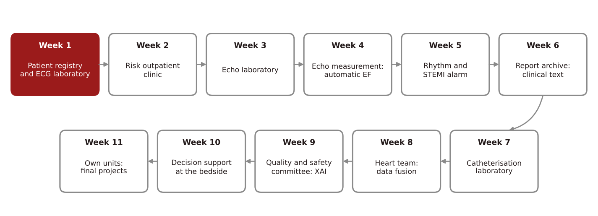

Turkish Society of Cardiology · Training programTürk Kardiyoloji Derneği · Eğitim programı
Artificial Intelligence with PythonPython ile Yapay Zekâ Eğitimi
A Hands-on Training Program for Cardiologists · 11 weeks, 44 hours · Prof. Dr. Utku KoseKardiyologlar için Uygulamalı Eğitim Programı · 11 hafta, 44 saat · Prof. Dr. Utku Köse
Eleven weeks of Python and artificial intelligence (AI) for cardiologists and other specialist physicians, with or without programming experience. Every week combines a clinical case, a Python step, a lecture page, an interactive lab, a Jupyter notebook and a weekly project. A virtual cardiology clinic of synthetic patients grows by one unit every week, and real public data accompany every topic. Participants also learn to write code with AI assistants under explicit safety rules, and every exercise can be solved on a prompt path.
Programlama deneyimi olan ya da olmayan kardiyologlar ve diğer uzman hekimler için on bir haftada Python ve yapay zekâ (YZ). Her hafta bir klinik vakayı, bir Python adımını, bir ders sayfasını, bir etkileşimli labı, bir Jupyter defterini ve bir haftalık projeyi bir araya getirir. Sentetik hastalardan oluşan sanal bir kardiyoloji kliniği her hafta bir birim büyür ve her konuya gerçek, açık veriler eşlik eder. Katılımcılar ayrıca YZ asistanlarıyla açık güvenlik kuralları içinde kod yazmayı öğrenir ve her alıştırma, bir YZ asistanına prompt (istem) yazılarak da çözülebilir.
Start hereBuradan başlayın
Anaconda, the course folder and Jupyter, step by step 1. Kurulum
Anaconda, ders klasörü ve Jupyter, adım adım 2. Start-here notebook
Checks the computer and the first lines of Python 2. Başlangıç defteri
Bilgisayarı denetler, ilk Python satırları 3. Prompt path
Every exercise solved with a prompt to an AI assistant, then checked 3. Prompt yolu
Her alıştırma bir YZ asistanına yöneltilen promptla çözülür ve denetlenir 4. Syllabus
Weekly plan, assessment and the rules for AI use 4. İzlence
Haftalık plan, değerlendirme ve YZ kullanım kuralları 5. Repository
All materials, data sets and references on GitHub 5. Depo
GitHub'da bütün malzemeler, veri setleri ve kaynaklar
The eleven weeksOn bir hafta
Tick a week when it is done; the page remembers it in this browser.Tamamladığınız haftayı işaretleyin; sayfa bunu bu tarayıcıda hatırlar.
The virtual clinicSanal klinik
